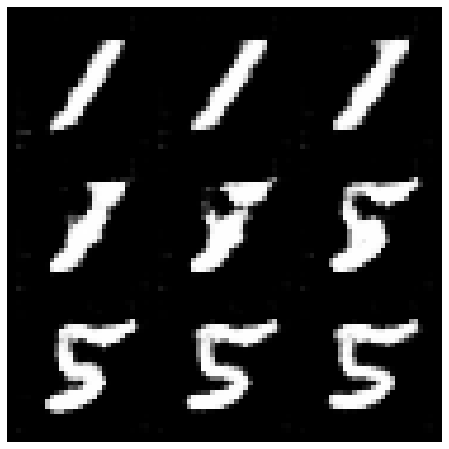
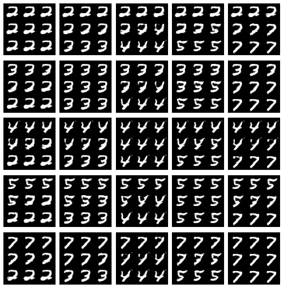

In this notebook, you’re going to make a conditional GAN in order to generate hand-written images of digits, conditioned on the digit to be generated (the class vector). This will let you choose what digit you want to generate.
You’ll then do some exploration of the generated images to visualize what the noise and class vectors mean.
Learning Objectives
Learn the technical difference between a conditional and unconditional GAN.
Understand the distinction between the class and noise vector in a conditional GAN.
Getting Started
For this assignment, you will be using the MNIST dataset again, but there’s nothing stopping you from applying this generator code to produce images of animals conditioned on the species or pictures of faces conditioned on facial characteristics.
Note that this assignment requires no changes to the architectures of the generator or discriminator, only changes to the data passed to both. The generator will no longer take z_dim as an argument, but input_dim instead, since you need to pass in both the noise and class vectors. In addition to good variable naming, this also means that you can use the generator and discriminator code you have previously written with different parameters.
You will begin by importing the necessary libraries and building the generator and discriminator.
import torch from torch import nn from tqdm.auto import tqdm from torchvision import transforms from torchvision.datasets import MNIST from torchvision.utils import make_grid from torch.utils.data import DataLoader import matplotlib.pyplot as plt torch.manual_seed(0) # Set for our testing purposes, please do not change!
defshow_tensor_images(image_tensor, num_images=25, size=(1, 28, 28), nrow=5, show=True): ''' Function for visualizing images: Given a tensor of images, number of images, and size per image, plots and prints the images in an uniform grid. ''' image_tensor = (image_tensor + 1) / 2 image_unflat = image_tensor.detach().cpu() image_grid = make_grid(image_unflat[:num_images], nrow=nrow) plt.imshow(image_grid.permute(1, 2, 0).squeeze()) if show: plt.show()
classGenerator(nn.Module): ''' Generator Class Values: input_dim: the dimension of the input vector, a scalar im_chan: the number of channels in the images, fitted for the dataset used, a scalar (MNIST is black-and-white, so 1 channel is your default) hidden_dim: the inner dimension, a scalar ''' def__init__(self, input_dim=10, im_chan=1, hidden_dim=64): super(Generator, self).__init__() self.input_dim = input_dim # Build the neural network self.gen = nn.Sequential( self.make_gen_block(input_dim, hidden_dim * 4), self.make_gen_block(hidden_dim * 4, hidden_dim * 2, kernel_size=4, stride=1), self.make_gen_block(hidden_dim * 2, hidden_dim), self.make_gen_block(hidden_dim, im_chan, kernel_size=4, final_layer=True), )
defmake_gen_block(self, input_channels, output_channels, kernel_size=3, stride=2, final_layer=False): ''' Function to return a sequence of operations corresponding to a generator block of DCGAN; a transposed convolution, a batchnorm (except in the final layer), and an activation. Parameters: input_channels: how many channels the input feature representation has output_channels: how many channels the output feature representation should have kernel_size: the size of each convolutional filter, equivalent to (kernel_size, kernel_size) stride: the stride of the convolution final_layer: a boolean, true if it is the final layer and false otherwise (affects activation and batchnorm) ''' ifnot final_layer: return nn.Sequential( nn.ConvTranspose2d(input_channels, output_channels, kernel_size, stride), nn.BatchNorm2d(output_channels), nn.ReLU(inplace=True), ) else: return nn.Sequential( nn.ConvTranspose2d(input_channels, output_channels, kernel_size, stride), nn.Tanh(), )
defforward(self, noise): ''' Function for completing a forward pass of the generator: Given a noise tensor, returns generated images. Parameters: noise: a noise tensor with dimensions (n_samples, input_dim) ''' x = noise.view(len(noise), self.input_dim, 1, 1) return self.gen(x)
defget_noise(n_samples, input_dim, device='cpu'): ''' Function for creating noise vectors: Given the dimensions (n_samples, input_dim) creates a tensor of that shape filled with random numbers from the normal distribution. Parameters: n_samples: the number of samples to generate, a scalar input_dim: the dimension of the input vector, a scalar device: the device type ''' return torch.randn(n_samples, input_dim, device=device)
classDiscriminator(nn.Module): ''' Discriminator Class Values: im_chan: the number of channels in the images, fitted for the dataset used, a scalar (MNIST is black-and-white, so 1 channel is your default) hidden_dim: the inner dimension, a scalar ''' def__init__(self, im_chan=1, hidden_dim=64): super(Discriminator, self).__init__() self.disc = nn.Sequential( self.make_disc_block(im_chan, hidden_dim), self.make_disc_block(hidden_dim, hidden_dim * 2), self.make_disc_block(hidden_dim * 2, 1, final_layer=True), )
defmake_disc_block(self, input_channels, output_channels, kernel_size=4, stride=2, final_layer=False): ''' Function to return a sequence of operations corresponding to a discriminator block of the DCGAN; a convolution, a batchnorm (except in the final layer), and an activation (except in the final layer). Parameters: input_channels: how many channels the input feature representation has output_channels: how many channels the output feature representation should have kernel_size: the size of each convolutional filter, equivalent to (kernel_size, kernel_size) stride: the stride of the convolution final_layer: a boolean, true if it is the final layer and false otherwise (affects activation and batchnorm) ''' ifnot final_layer: return nn.Sequential( nn.Conv2d(input_channels, output_channels, kernel_size, stride), nn.BatchNorm2d(output_channels), nn.LeakyReLU(0.2, inplace=True), ) else: return nn.Sequential( nn.Conv2d(input_channels, output_channels, kernel_size, stride), )
defforward(self, image): ''' Function for completing a forward pass of the discriminator: Given an image tensor, returns a 1-dimension tensor representing fake/real. Parameters: image: a flattened image tensor with dimension (im_chan) ''' disc_pred = self.disc(image) return disc_pred.view(len(disc_pred), -1)
Class Input
In conditional GANs, the input vector for the generator will also need to include the class information. The class is represented using a one-hot encoded vector where its length is the number of classes and each index represents a class. The vector is all 0’s and a 1 on the chosen class. Given the labels of multiple images (e.g. from a batch) and number of classes, please create one-hot vectors for each label. There is a class within the PyTorch functional library that can help you.
# UNQ_C1 (UNIQUE CELL IDENTIFIER, DO NOT EDIT) # GRADED FUNCTION: get_one_hot_labels
import torch.nn.functional as F defget_one_hot_labels(labels, n_classes): ''' Function for creating one-hot vectors for the labels, returns a tensor of shape (?, num_classes). Parameters: labels: tensor of labels from the dataloader, size (?) n_classes: the total number of classes in the dataset, an integer scalar ''' #### START CODE HERE #### return F.one_hot(labels, n_classes).float() #### END CODE HERE ####
Next, you need to be able to concatenate the one-hot class vector to the noise vector before giving it to the generator. You will also need to do this when adding the class channels to the discriminator.
To do this, you will need to write a function that combines two vectors. Remember that you need to ensure that the vectors are the same type: floats. Again, you can look to the PyTorch library for help.
Specifically, you might want to look at what the dim argument of torch.cat does.
1 2 3 4 5 6 7 8 9 10 11 12 13 14 15 16 17 18
# UNQ_C2 (UNIQUE CELL IDENTIFIER, DO NOT EDIT) # GRADED FUNCTION: combine_vectors defcombine_vectors(x, y): ''' Function for combining two vectors with shapes (n_samples, ?) and (n_samples, ?). Parameters: x: (n_samples, ?) the first vector. In this assignment, this will be the noise vector of shape (n_samples, z_dim), but you shouldn't need to know the second dimension's size. y: (n_samples, ?) the second vector. Once again, in this assignment this will be the one-hot class vector with the shape (n_samples, n_classes), but you shouldn't assume this in your code. ''' # Note: Make sure this function outputs a float no matter what inputs it receives #### START CODE HERE #### combined = torch.cat((x, y), 1).float() #### END CODE HERE #### return combined
1 2 3 4 5 6 7 8 9 10
combined = combine_vectors(torch.tensor([[1, 2], [3, 4]]), torch.tensor([[5, 6], [7, 8]])); # Check exact order of elements assert torch.all(combined == torch.tensor([[1, 2, 5, 6], [3, 4, 7, 8]])) # Tests that items are of float type assert (type(combined[0][0].item()) == float) # Check shapes combined = combine_vectors(torch.randn(1, 4, 5), torch.randn(1, 8, 5)); asserttuple(combined.shape) == (1, 12, 5) asserttuple(combine_vectors(torch.randn(1, 10, 12).long(), torch.randn(1, 20, 12).long()).shape) == (1, 30, 12) print("Success!")
Success!
Training
Now you can start to put it all together! First, you will define some new parameters:
mnist_shape: the number of pixels in each MNIST image, which has dimensions 28 x 28 and one channel (because it’s black-and-white) so 1 x 28 x 28
n_classes: the number of classes in MNIST (10, since there are the digits from 0 to 9)
1 2
mnist_shape = (1, 28, 28) n_classes = 10
And you also include the same parameters from previous assignments:
criterion: the loss function
n_epochs: the number of times you iterate through the entire dataset when training
z_dim: the dimension of the noise vector
display_step: how often to display/visualize the images
batch_size: the number of images per forward/backward pass
Then, you can initialize your generator, discriminator, and optimizers. To do this, you will need to update the input dimensions for both models. For the generator, you will need to calculate the size of the input vector; recall that for conditional GANs, the generator’s input is the noise vector concatenated with the class vector. For the discriminator, you need to add a channel for every class.
# UNQ_C3 (UNIQUE CELL IDENTIFIER, DO NOT EDIT) # GRADED FUNCTION: get_input_dimensions defget_input_dimensions(z_dim, mnist_shape, n_classes): ''' Function for getting the size of the conditional input dimensions from z_dim, the image shape, and number of classes. Parameters: z_dim: the dimension of the noise vector, a scalar mnist_shape: the shape of each MNIST image as (C, W, H), which is (1, 28, 28) n_classes: the total number of classes in the dataset, an integer scalar (10 for MNIST) Returns: generator_input_dim: the input dimensionality of the conditional generator, which takes the noise and class vectors discriminator_im_chan: the number of input channels to the discriminator (e.g. C x 28 x 28 for MNIST) ''' #### START CODE HERE #### generator_input_dim = z_dim + n_classes discriminator_im_chan = mnist_shape[0] + n_classes #### END CODE HERE #### return generator_input_dim, discriminator_im_chan
Now to train, you would like both your generator and your discriminator to know what class of image should be generated. There are a few locations where you will need to implement code.
For example, if you’re generating a picture of the number “1”, you would need to:
Tell that to the generator, so that it knows it should be generating a “1”
Tell that to the discriminator, so that it knows it should be looking at a “1”. If the discriminator is told it should be looking at a 1 but sees something that’s clearly an 8, it can guess that it’s probably fake
There are no explicit unit tests here – if this block of code runs and you don’t change any of the other variables, then you’ve done it correctly!
for epoch inrange(n_epochs): # Dataloader returns the batches and the labels for real, labels in tqdm(dataloader): cur_batch_size = len(real) # Flatten the batch of real images from the dataset real = real.to(device)
### Update discriminator ### # Zero out the discriminator gradients disc_opt.zero_grad() # Get noise corresponding to the current batch_size fake_noise = get_noise(cur_batch_size, z_dim, device=device) # Now you can get the images from the generator # Steps: 1) Combine the noise vectors and the one-hot labels for the generator # 2) Generate the conditioned fake images #### START CODE HERE #### noise_and_labels = torch.cat((fake_noise,one_hot_labels), 1) fake = gen(noise_and_labels) #### END CODE HERE #### # Make sure that enough images were generated assertlen(fake) == len(real) # Check that correct tensors were combined asserttuple(noise_and_labels.shape) == (cur_batch_size, fake_noise.shape[1] + one_hot_labels.shape[1]) # It comes from the correct generator asserttuple(fake.shape) == (len(real), 1, 28, 28)
# Now you can get the predictions from the discriminator # Steps: 1) Create the input for the discriminator # a) Combine the fake images with image_one_hot_labels, # remember to detach the generator (.detach()) so you do not backpropagate through it # b) Combine the real images with image_one_hot_labels # 2) Get the discriminator's prediction on the fakes as disc_fake_pred # 3) Get the discriminator's prediction on the reals as disc_real_pred #### START CODE HERE #### fake_image_and_labels = torch.cat((fake.detach(), image_one_hot_labels), 1) real_image_and_labels = torch.cat((real.detach(), image_one_hot_labels), 1) disc_fake_pred = disc(fake_image_and_labels) disc_real_pred = disc(real_image_and_labels) #### END CODE HERE #### # Make sure shapes are correct asserttuple(fake_image_and_labels.shape) == (len(real), fake.detach().shape[1] + image_one_hot_labels.shape[1], 28 ,28) asserttuple(real_image_and_labels.shape) == (len(real), real.shape[1] + image_one_hot_labels.shape[1], 28 ,28) # Make sure that enough predictions were made assertlen(disc_real_pred) == len(real) # Make sure that the inputs are different assert torch.any(fake_image_and_labels != real_image_and_labels) # Shapes must match asserttuple(fake_image_and_labels.shape) == tuple(real_image_and_labels.shape) asserttuple(disc_fake_pred.shape) == tuple(disc_real_pred.shape) disc_fake_loss = criterion(disc_fake_pred, torch.zeros_like(disc_fake_pred)) disc_real_loss = criterion(disc_real_pred, torch.ones_like(disc_real_pred)) disc_loss = (disc_fake_loss + disc_real_loss) / 2 disc_loss.backward(retain_graph=True) disc_opt.step()
# Keep track of the average discriminator loss discriminator_losses += [disc_loss.item()]
### Update generator ### # Zero out the generator gradients gen_opt.zero_grad()
fake_image_and_labels = combine_vectors(fake, image_one_hot_labels) # This will error if you didn't concatenate your labels to your image correctly disc_fake_pred = disc(fake_image_and_labels) gen_loss = criterion(disc_fake_pred, torch.ones_like(disc_fake_pred)) gen_loss.backward() gen_opt.step()
# Keep track of the generator losses generator_losses += [gen_loss.item()] #
if cur_step % display_step == 0and cur_step > 0: gen_mean = sum(generator_losses[-display_step:]) / display_step disc_mean = sum(discriminator_losses[-display_step:]) / display_step print(f"Step {cur_step}: Generator loss: {gen_mean}, discriminator loss: {disc_mean}") show_tensor_images(fake) show_tensor_images(real) step_bins = 20 x_axis = sorted([i * step_bins for i inrange(len(generator_losses) // step_bins)] * step_bins) num_examples = (len(generator_losses) // step_bins) * step_bins plt.plot( range(num_examples // step_bins), torch.Tensor(generator_losses[:num_examples]).view(-1, step_bins).mean(1), label="Generator Loss" ) plt.plot( range(num_examples // step_bins), torch.Tensor(discriminator_losses[:num_examples]).view(-1, step_bins).mean(1), label="Discriminator Loss" ) plt.legend() plt.show() elif cur_step == 0: print("Congratulations! If you've gotten here, it's working. Please let this train until you're happy with how the generated numbers look, and then go on to the exploration!") cur_step += 1
# Before you explore, you should put the generator # in eval mode, both in general and so that batch norm # doesn't cause you issues and is using its eval statistics gen = gen.eval()
Changing the Class Vector
You can generate some numbers with your new model! You can add interpolation as well to make it more interesting.
So starting from a image, you will produce intermediate images that look more and more like the ending image until you get to the final image. Your’re basically morphing one image into another. You can choose what these two images will be using your conditional GAN.
### Change me! ### n_interpolation = 9# Choose the interpolation: how many intermediate images you want + 2 (for the start and end image) interpolation_noise = get_noise(1, z_dim, device=device).repeat(n_interpolation, 1)
## Uncomment the following lines of code if you would like to visualize a set of pairwise class ## interpolations for a collection of different numbers, all in a single grid of interpolations. ## You'll also see another visualization like this in the next code block! plot_numbers = [2, 3, 4, 5, 7] n_numbers = len(plot_numbers) plt.figure(figsize=(8, 8)) for i, first_plot_number inenumerate(plot_numbers): for j, second_plot_number inenumerate(plot_numbers): plt.subplot(n_numbers, n_numbers, i * n_numbers + j + 1) interpolate_class(first_plot_number, second_plot_number) plt.axis('off') plt.subplots_adjust(top=1, bottom=0, left=0, right=1, hspace=0.1, wspace=0) plt.show() plt.close()


Changing the Noise Vector
Now, what happens if you hold the class constant, but instead you change the noise vector? You can also interpolate the noise vector and generate an image at each step.
n_interpolation = 9# How many intermediate images you want + 2 (for the start and end image)
# This time you're interpolating between the noise instead of the labels interpolation_label = get_one_hot_labels(torch.Tensor([5]).long(), n_classes).repeat(n_interpolation, 1).float()
definterpolate_noise(first_noise, second_noise): # This time you're interpolating between the noise instead of the labels percent_first_noise = torch.linspace(0, 1, n_interpolation)[:, None].to(device) interpolation_noise = first_noise * percent_first_noise + second_noise * (1 - percent_first_noise)
# Combine the noise and the labels again noise_and_labels = combine_vectors(interpolation_noise, interpolation_label.to(device)) fake = gen(noise_and_labels) show_tensor_images(fake, num_images=n_interpolation, nrow=int(math.sqrt(n_interpolation)), show=False)
# Generate noise vectors to interpolate between ### Change me! ### n_noise = 5# Choose the number of noise examples in the grid plot_noises = [get_noise(1, z_dim, device=device) for i inrange(n_noise)] plt.figure(figsize=(8, 8)) for i, first_plot_noise inenumerate(plot_noises): for j, second_plot_noise inenumerate(plot_noises): plt.subplot(n_noise, n_noise, i * n_noise + j + 1) interpolate_noise(first_plot_noise, second_plot_noise) plt.axis('off') plt.subplots_adjust(top=1, bottom=0, left=0, right=1, hspace=0.1, wspace=0) plt.show() plt.close()